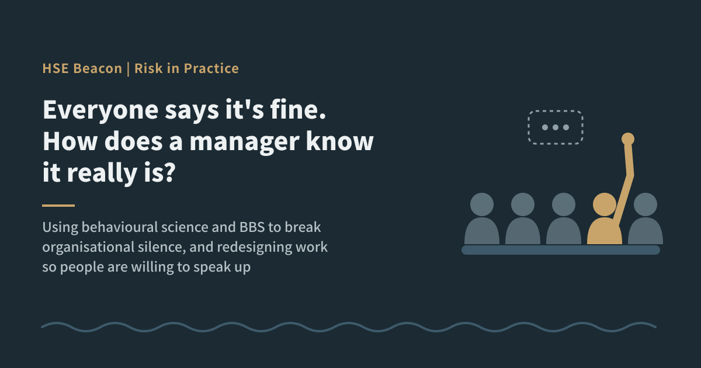

Risk in Practice / Issue 04 essay
Everyone says it's fine. How does a manager know it really is?
Using behavioural science and BBS to break organisational silence, and redesigning work so people are willing to speak up
Translated from the author's Chinese original. 閱讀中文原文

01 | Nods around the table, and two sudden sick notes
Monday morning. The manager is looking at a dense work schedule on the projector.
"The workload's going to go up quite a bit over the next few weeks. Everyone should be OK with that, right? Any problems?"
The room goes quiet for a few seconds.
Someone looks down at their notes, someone glances at the colleague next to them, and then a few people nod politely.
"No problem."
The manager relaxes and moves on to the next item.
The meeting ends and everyone goes back to their desks. The schedule doesn't change, no one is added to the team, and new tasks keep piling onto work that was already tight.
The scene is invented, but it may be a true picture of what plays out in many workplaces every day.
We're too used to reading silence in a meeting room as agreement, and taking the fact that no one raises a difficulty as proof the team still has the capacity to carry the work.
Until one day someone suddenly goes on long-term leave, someone hands in their notice, or an operating error that should never have happened throws the whole work plan off.
Only then does the manager start to wonder:
"Didn't everyone say it was fine?"
According to the 2025/26 workplace health and safety statistics from Britain's Health and Safety Executive (HSE), an estimated 891,000 workers suffered from work-related stress, depression or anxiety, leading to around 18.2 million lost working days.
Behind those numbers, some people may have kept turning up to work, sitting in meetings, answering emails and even hitting their targets right up until the problem became serious.
A British scientific instruments company called Singer Instruments once faced a similar management challenge.
The company, with around 45 employees, once had two employees on sick leave with work-related stress. A few years later, as it kept growing, it faced new workload challenges.
For a company that size, this isn't just two fewer people at work.
The more important question is whether the existing work arrangements and staffing could still support what the business actually needed as it grew.
But before we talk about staffing, perhaps we should ask a more basic question.
When employees are already feeling the strain, why do managers sometimes only realise there's a problem after sick leave, a resignation or an incident?
02 | Maybe it isn't that people won't speak up. Maybe the organisation taught them silence
In offshore wind operations and maintenance (O&M), I regularly take part in pre-task safety meetings, reviews of contractors' risk assessments, and coordination between departments.
These meetings usually end in a very familiar way.
"Any other business? (AOB)"
If no one raises a hand, that's basically the end of the meeting.
But over the years I've come to feel that this reasonable-sounding question hides a big management blind spot.
Because what we're asking is:
"Is anyone willing to raise a problem in this setting?"
Yet we easily read the answer as:
"Are there any problems out there?"
Those are two completely different things.
Speaking up has a cost
Try looking at it from the frontline worker's point of view.
The manager, the project manager, the client representative and colleagues from other departments are all in the room, and everyone wants the work to go to plan.
If you raise a staffing shortfall, an unrealistic schedule, or a lack of confidence in a particular task step, what might happen next?
You may need to spend more time explaining your concerns.
You may be asked to come up with an alternative plan.
You may also worry that others will see you as lacking ability, not proactive enough, or even unwilling to be a team player.
And if you've raised problems before without getting a proper response, you might think one more thing:
"It won't make any difference, so why bother?"
In that situation, "no problem" may not mean there's no problem. It may simply be the cheapest answer.
This brings to mind a very familiar management method in HSE: Behavior-Based Safety (BBS).
Traditionally, we've used BBS to observe the behaviour of frontline workers.
- Are they wearing their PPE correctly?
- Are they following safety procedures?
- Do they stop work when they spot a hazard?
- Do they report near misses?
But if we shift the focus of observation from frontline staff to the whole organisation, might we see things we've been overlooking?
Taking apart meeting-room silence with the ABC model
Behavioural science has a very practical analytical framework called the ABC model.
- A is Antecedent: the conditions before a behaviour happens.
- B is Behavior: the behaviour that actually happens.
- C is Consequence: the results that follow the behaviour.
Let's use this model to look again at how an employee comes to choose silence.
Suppose he once told his manager the workload was too heavy, and the reply was:
"Everyone's busy. Why are you the only one with a problem?"
Another time he raised a safety concern about a task, was asked to write more explanatory paperwork as a result, and in the end nothing about the working conditions improved.
After a few experiences like that, when the manager asks again, "Any problems?", he may already have learned one thing.
Staying quiet avoids more trouble than speaking up.
| ABC model | Possible situation in the organisation |
|---|---|
| A: Antecedent | Schedule pressure, open meetings, unequal power, past reports that led to no improvement |
| B: Behavior | Staying quiet, saying "no problem", carrying on with the work |
| C: Consequence | Avoiding conflict, avoiding extra admin, keeping relationships smooth for now |
If staying quiet lets an employee avoid unpleasant outcomes, and that experience makes him more likely to stay quiet in future, then in behavioural science this may involve a mechanism called "negative reinforcement".
Negative reinforcement is not punishment.
It means a behaviour becomes more likely to happen again because it removes or avoids something unpleasant.
In other words, an organisation may ask employees to report proactively while, through its everyday management behaviour, continually reinforcing their silence.
That's rather ironic.
We run more safety campaigns, hold more training, and even require every employee to submit a set number of safety observation records each month.
Yet the conditions that actually shape behaviour never change.
Of course, not every silence means an employee is afraid, and not all organisational silence can be explained by a single reinforcement mechanism.
But managers should at least start asking:
If employees choose silence, besides asking why they didn't speak, shouldn't we also look at how the organisation has responded to those who did?
When external loads change, the design basis needs another look
An audit by Havtil, Norway's offshore industry regulator, of structures on ConocoPhillips' offshore facilities offers another angle worth considering.
When the specifications or operating patterns of visiting vessels, or other external conditions, change, the structural design assumptions originally used to assess the risk of vessel impact need to be checked again to see whether they still apply.
We can't assume a structure can withstand every future load just because it hasn't had an accident so far.
This engineering idea applies to managing organisations too.
Suppose a department has five people responsible for ten main tasks.
A year later the business has grown, there are more customers, and the tasks have gone from ten to fifteen.
But the department's staffing, tools, workflows and decision rights haven't been adjusted to match.
We might even assume that because these five people have performed well in the past, they should be able to keep taking on more.
Of course, people aren't steel, and a person's mental state can't be calculated precisely with a single number the way an engineering material can.
But the two share a management principle:
When the load on a system changes materially, the original safety assumptions need to be tested again.
We can't expect an organisation to keep growing while assuming its original staffing and ways of working can absorb new demands indefinitely.
03 | What did Singer Instruments get right? Redesigning the conditions for behaviour
Back to Singer Instruments in the UK.
When the two employees went on sick leave with work-related stress, the company first helped them back to work gradually through a phased return and suitable changes to their roles.
But if management had stopped there, the problem might not really have been solved.
Because the employees might be going back to the very working environment that had caused their stress.
What's more worth learning from Singer Instruments is that they went on to examine work demands and, through staff interviews, staffing changes and cross-training, tried to tackle the structural problems behind the workload.
Reading the case again through a behavioural science lens, I think it can be organised into three steps.
Step 1: Change the antecedents and lower the cost of speaking up
When the assembly department's work demands started showing warning signs, the company's quality manager, who led its stress prevention work, was able to use confidential one-to-one interviews to understand the difficulties staff were facing.
This looks simple, but it makes an important difference in behavioural design.
An open meeting asks employees to decide, in front of everyone, whether they're willing to raise a concern.
A one-to-one interview offers another, relatively low-risk channel.
That amounts to redesigning the A in the ABC model: the conditions before the behaviour.
More importantly, the interview shouldn't stop at:
"How stressed have you been lately?"
It should go further into the work itself.
- Which tasks regularly take longer than expected?
- Which work is concentrated on a few people with specific skills?
- Which processes keep getting delayed because of handovers, missing information or waiting for decisions?
- When the workload rises, do employees have the authority to reorder priorities?
These questions can gradually turn a vague feeling of pressure into working conditions that can be managed.
"I've been really tired lately" is a signal worth taking seriously.
But if we also learn that one employee is covering three jobs, and is the only person with the skills for two of them, the manager has a much clearer direction for improvement.
The point of listening isn't just to let people say it. It's to give the organisation a chance to see risks it hasn't been managing.
Step 2: Change the consequences, so speaking up actually helps
Once Singer Instruments understood the assembly department's work demands, it made real staffing changes and used cross-training so that more employees could support different jobs.
They didn't stop at caring about how employees felt. They went on to examine how the work itself was designed.
In many companies, when employees say the pressure is too much, the organisation may arrange mental health talks, stress management courses, staff wellbeing activities, or access to counselling.
These measures all have their value and purpose.
But if the pressure mainly comes from long-term understaffing, unreasonable workloads, role conflict or a lack of the resources needed to do the job, then offering only personal coping tools may not be enough.
If a local exhaust system doesn't have enough extraction capacity, we can't just ask the people on site to get better at dodging the contaminant.
We also need to look again at the design of the exhaust system and the load it actually carries.
From a behavioural science point of view, the staffing changes also altered the C in the ABC model: what follows when an employee raises a problem.
Before, raising a problem might only bring more explaining, more admin and more interpersonal strain.
Now, raising a problem has a chance of bringing real staffing support, redistributed work and the training that's needed.
As employees gradually find that speaking up doesn't necessarily cause trouble, and may even improve their working conditions, the organisation creates an environment that favours speaking up.
This is also an important link between psychological safety and behavioural science.
Psychological safety isn't built by a manager announcing, "My door is always open."
It takes real interactions, again and again, for employees to gradually come to trust the organisation.
Don't dress up the organisation's lack of capacity as employees' lack of resilience.
Step 3: Go back to the floor and check the new environment really works
After the staffing changes, Singer Instruments didn't immediately treat the problem as solved.
A few weeks later, the manager went back to the employees to check whether the issues they'd raised had improved.
This step is easy to overlook.
Because for managers, adding staff, completing training or reallocating work is already a concrete management result.
But for frontline employees, what matters is whether these measures have changed their own working situation.
- Adding one employee doesn't necessarily remove the original bottleneck.
- Completing cross-training doesn't mean the trainee can do the job independently.
- Reallocating work may simply shift the load that was concentrated on one person onto someone else.
So the follow-up visit shouldn't just be a polite check-in. It should be part of verifying effectiveness.
This echoes the ideas from our previous two essays:
An improvement being completed doesn't mean it's effective; achieving a stage result doesn't mean every risk is under control.
The published Singer Instruments case describes practical experience with return-to-work arrangements, staff interviews and improvement measures, but it doesn't provide data that could quantify a fall in sick leave or long-term improvements in mental health.
So we can't claim this approach has fully solved work-related stress.
Still, it offers a management direction well worth borrowing:
Lower the cost of speaking up, adjust the working conditions, rebuild the feedback loop, then verify the improvement works.
This is where I think behaviour-based safety is worth developing further.
Not just changing people's behaviour, but changing the systems that shape it.
04 | What if BBS started observing managers too?
For years, companies have used behaviour-based safety to observe the safety behaviour of frontline workers.
We record how often PPE is worn correctly, whether procedures are followed, and whether employees identify hazards on their own.
These observations have value.
But I'd like to raise a question:
If a company completes thousands of frontline safety observations a year but has never observed how managers respond to safety concerns, is its BBS programme only watching part of the system?
Suppose a technician finds before a job that sea conditions are worse than expected, and thinks the work plan needs to be reassessed.
He raises the concern, or even uses his Stop Work Authority.
What the supervisor does next may decide more than whether today's job can go ahead safely.
It may also affect whether this technician, and the colleagues around him, are willing to speak up the next time something similar happens.
If the supervisor's first reaction is:
"Do you know how much stopping today is going to cost?"
Then even if the company's safety policy says "everyone has the right to stop unsafe work", what employees actually learn may still be that stopping work brings trouble.
If, instead, the supervisor supports the necessary pause, reassesses the risk and provides the right resources, employees have a chance to build trust in the system through real experience.
Managers' behaviour is itself one of the key conditions shaping employees' future safety behaviour.
So I believe BBS shouldn't observe only frontline staff.
We should observe managers too.
| Management situation | Management behaviour worth observing |
|---|---|
| An employee raises a work difficulty | Does the manager actively review workload and resources? |
| A contractor raises schedule concerns | Is the manager willing to reassess the schedule? |
| An employee uses Stop Work | Does the manager support the necessary pause and risk assessment? |
| A near miss is found | Does the manager first try to understand the conditions behind it? |
| An employee admits being unfamiliar with a method | Does the manager provide the support and training needed? |
| A safety improvement suggestion comes in | Does the manager assign an owner and report back on progress? |
| An improvement is completed | Does the manager confirm working conditions on site have really improved? |
This isn't about building another scoring system to police managers.
It's about helping the organisation understand that safety behaviour isn't decided by frontline workers alone.
It's also shaped by job design, equipment, management decisions, resource allocation and organisational culture.
Changing management behaviour, starting with "Any problems?"
In a pre-task toolbox talk (TBT), or when reviewing a contractor's risk assessment and method statement (RAMS), we can try asking differently.
Don't only ask:
"Does anyone have any problems with today's work?"
Go further and ask:
- "Which step today is most likely to get cut short because of time pressure?"
- "If the sea state is worse than expected, which jobs need rescheduling?"
- "If critical equipment fails, what resources do we have to support us?"
- "Which job can currently be done by only one person?"
- "If we can't finish everything today, which tasks can wait?"
These questions spare people from having to admit they can't cope, and instead invite them to look at working conditions and possible changes together.
But changing how we ask is only the first step.
If nothing about the work changes after people raise difficulties, even the best questioning technique will gradually stop working.
A real closed loop should include:
- Identifying work difficulties and risk signals.
- Understanding the working conditions behind the problem.
- Assigning an owner with the authority to deal with it.
- Making the necessary resource or job-design changes.
- Following up and verifying the improvement.
- Feeding the outcome back to the people involved.
Issues involving immediate danger need appropriate safety measures straight away, not routine follow-up.
Information about personal health must also be kept properly confidential and private.
General workload and process issues can be given reasonable improvement deadlines and follow-up dates according to their level of risk.
Rather than simply counting safety observations, I'd like organisations to start paying attention to:
- Once employees raise problems, how many actually get dealt with?
- How long does it take managers to take real action?
- Do the same work difficulties keep coming back?
On their own, these indicators can't represent an organisation's safety culture, but they can help us understand whether it is able to receive and respond to risk signals.
At home, are we also reinforcing silence without meaning to?
This doesn't only apply to business management and high-risk work sites.
Spending time with my child, I've also started to reflect on how I react when my child tells me something is hard.
When my child says "I don't want to have a bath" or "I don't want to go to sleep", or pushes back on something, a parent's first reaction is often to want them to cooperate quickly.
But if every time a child expresses a difficulty they're met with hurrying, scolding or dismissal, they may gradually learn:
Saying how I feel doesn't make things any better.
Of course, understanding a child's feelings doesn't mean every rule can be dropped.
Parents still need to set appropriate boundaries.
But we can try to separate two things:
Accepting the other person's feelings, and whether we agree to what they're asking for.
Just as at work, a manager can't necessarily grant every resource request an employee makes, but can still take the problem seriously, explain the constraints and look for workable solutions together.
I've gradually realised that what matters isn't getting my child to obey every time, but letting them know that when something is hard, it's safe to say so.
Because if we chase obedience in the moment while the other person gradually loses the will to tell us about their difficulties, the smoothness on the surface may come at the cost of long-term trust.
A family isn't a factory, and children aren't production resources to be managed.
But both remind me of one thing:
How we respond the first time someone speaks up may decide whether they're willing to speak up again.
05 | A real safety culture isn't one where nobody says "I can't cope"
Back to that meeting room on Monday morning.
The manager is looking at the tight schedule again.
But this time, he doesn't just ask:
"It should all be fine, right?"
Instead, he tries asking:
- "There's quite a lot of new work this week. Which tasks might go beyond what we can currently handle?"
- "If we have to reorder priorities, what can we put down first?"
- "Is there any work that needs support from another department?"
The room is still quiet for a few seconds.
Then someone raises a hand.
"Actually, there's something I'd like to bring up."
For some managers, this may mean the original work plan is about to be disrupted.
But it's actually a moment worth treasuring.
Because the organisation finally has a chance to see the problem before it turns into an incident, long-term sick leave or people leaving.
Looking back at earlier HSE Beacon essays, we've talked about using engineering design to reduce the risk of human error, how to verify that controls are effective, and how to draw the boundaries for closing out improvements.
This time, we've started asking a further question:
How exactly is people's safety behaviour shaped by the organisation?
If we want employees to identify hazards proactively, we have to give them enough time and resources.
If we want employees to stop work when necessary, we have to let them know that decision will be properly supported.
If we want employees to be honest about difficulties at work, we have to make them believe that speaking up won't just bring more trouble.
This is also a research direction I hope to explore further: Systemic Behavioral Safety.
It isn't about rejecting traditional BBS. It's about extending the view of behaviour-based safety from frontline workers' individual behaviour to the working environment, management decisions and organisational systems that shape it.
Because a truly mature safety culture isn't one that never has bad news.
It's one that can hear bad news, understand it and act on it before it turns into serious consequences.
Silence in a meeting room has never been enough to prove that all is calm.
A truly robust system isn't built by asking everyone to grit their teeth and push through.
It's built when someone first raises a hand and says:
"This is too heavy."
And the whole organisation is willing to stop, look at the load seriously and adjust it.
Then, a few weeks later, goes back and asks:
"Is it any better now?"
Case sources and further reading
UK | Singer Instruments work-related stress case study
HSE stress case study. It describes return-to-work arrangements, confidential interviews, extra staff and cross-training, and staff feedback at a follow-up a few weeks later. It gives no quantified fall in sick leave.Official source
UK | Workplace health and safety statistics 2025/26
HSE annual statistics, published November 2026, covering April 2025 to March 2026.Official source
Norway | Havtil audit of ConocoPhillips load-bearing structures
Havtil audit report, published 2026.11.20, covering the design loads and impact resistance of bridges that could be struck by visiting vessels.Official source
On this site
- Issue 04 | Singer Instruments case summary and evidence status
- We've warned them a hundred times. Why do accidents still happen?
- The concentration came down. Can we really close it out?
Editor's note: The opening meeting and the department and technician scenarios are hypothetical situations written by the author. The ABC model analysis and the idea of observing management behaviour are the essay's own analytical framing, not practices proposed by the agencies above.